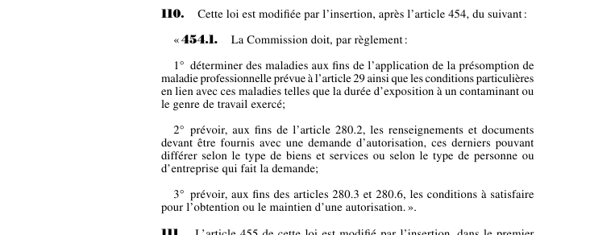

art-110-LMRSST : insère l'art. 454.1 LATMP
Article modificateur qui crée de toutes pièces l'art. 454.1 LATMP, inséré après l'art. 454. Il impose trois règlements à la CNESST, qui « doit » les prendre.
- Pouvoir 1 (paragraphe 1°) : déterminer les maladies visées par la présomption de maladie professionnelle de l'art. 29 LATMP, ainsi que les conditions particulières liées à ces maladies, telles la durée d'exposition à un contaminant ou le genre de travail exercé.
- Pouvoir 2 (paragraphe 2°) : fixer, aux fins de l'art. 280.2, les renseignements et documents à joindre à une demande d'autorisation, qui peuvent varier selon le type de biens et services ou selon le type de personne ou d'entreprise demanderesse.
- Pouvoir 3 (paragraphe 3°) : fixer, aux fins des art. 280.3 et 280.6, les conditions à satisfaire pour obtenir ou maintenir une autorisation.
- Portée pratique : c'est par ces règlements que se définit concrètement la liste des maladies présumées professionnelles, donc l'accès à la présomption.
📄 PDF officiel (page 38) · 🌐 LegisQuébec
Texte officiel
Cette loi est modifiée par l’insertion, après l’article 454, du suivant :
« 454.1. La Commission doit, par règlement :
1° déterminer des maladies aux fins de l’application de la présomption de maladie professionnelle prévue à l’article 29 ainsi que les conditions particulières en lien avec ces maladies telles que la durée d’exposition à un contaminant ou le genre de travail exercé;
2° prévoir, aux fins de l’article 280.2, les renseignements et documents devant être fournis avec une demande d’autorisation, ces derniers pouvant différer selon le type de biens et services ou selon le type de personne ou d’entreprise qui fait la demande;
3° prévoir, aux fins des articles 280.3 et 280.6, les conditions à satisfaire pour l’obtention ou le maintien d’une autorisation. ».
Texte de l’article 110 LMRSST, extrait de la couche texte du PDF officiel (page 38), sans OCR ni retouche. La capture ci-dessous et le PDF font foi.
{kind=link}

Toucher l'image pour l'agrandir🔗 Ouvrir a cette page : LMRSST.pdf : page 38
- Insère l'art. 454.1 dans la LATMP (RLRQ c. A-3.001), après l'art. 454.
Portée et effet
Adopté dans le cadre de la réforme de 2021 modernisant le régime de santé et de sécurité du travail, l'article 110 de la LMRSST insère l'art. 454.1 dans la LATMP, immédiatement après l'art. 454. Cette nouvelle disposition oblige la CNESST à prendre trois séries de règlements : la liste des maladies présumées professionnelles et leurs conditions particulières, les pièces exigées d'un demandeur d'autorisation, et les conditions d'obtention ou de maintien de cette autorisation. Le libellé exact figure dans la capture officielle ci-dessus. Le chapitre I de la LMRSST réforme la LATMP : comité scientifique des maladies professionnelles, réadaptation et retour au travail, indemnités, procédures et recours.
La jurisprudence porte sur la disposition insérée, art. 454.1 LATMP, et non sur l'article modificateur lui-même (les décisions et leurs PDF sont rassemblés sur la page de cet article).
Voir aussi
- 🎯 Article inséré : art. 454.1 LATMP · pouvoirs réglementaires de la CNESST : maladies présumées professionnelles et autorisations de fournisseurs.
- 🔗 Article de rattachement : art. 454 LATMP
- 🗓️ Entrée en vigueur : 6 avril 2022 (partiel : voir art. 313 ¶1) (voir art. 313 LMRSST)
- 📚 Chapitre : Chap. I : modifications à la LATMP
- ↑ Loi : LMRSST
Pages qui pointent ici (5)
- art-284-LMRSST : transition Recueil législatif
- art-285-LMRSST : transition Recueil législatif
- art-454-LATMP : réclamation Recueil législatif
- art-454.1-LATMP : règlements obligatoires de la CNESST Recueil législatif
- LMRSST : Chapitre I : Modifications à la LATMP Recueil législatif